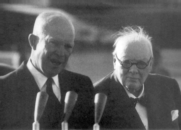

Dwight D. Eisenhower ve Churchill Londra’da, 1959
1952 Mart’ında Kore Savaşı bitmeden, Stalin Soğuk Savaş’ı sona erdirmek için sınırlandırma politikası yaratıcılarının beklentilerinin tamamen zıttı gerekçelerle diplomatik bir girişim yaptı. Bu girişim, onların beklediği gibi Sovyet sistemindeki bir dönüşüm nedeniyle olmuş bir şey değildi. Aksine, komünizmin en büyük ideoloğu, kazanamayacağını bildiği silahlanma yarışından komünist sistemi korumak çabası içinde idi. Gerçekten de Marksizm’inin ve paranoyasının karışımı göz önüne alındığında Stalin, Amerika’nın bu kadar büyük bir gücü temelde savunma amacıyla seferber edeceğine inanamazdı.
Stalin’in önerisi, uyumlu bir dünya düzeni kurulmasından hiç söz etmiyordu. Soğuk Savaş’a neden olan şartları ortadan kaldırmak yerine, Amerikan düşüncesinin nefret ettiği bir şeyin, yani iki nüfuz küresinin karşılıklı olarak tanınmasını istiyordu. Batı Avrupa’da Amerika için bir küre, Doğu Avrupa’da Sovyetler Birliği için bir küre ve her ikisinin arasında birleştirilmiş ve silahlanmış olarak tarafsız bir Almanya bulunacaktı.
O zamandan beri tarihçiler ve politik liderler, Stalin’in bu hareketinin Soğuk Savaş’ı çözmek için kaçırılan bir fırsat mı, yoksa demokrasileri, başlaması Almanya’nın silahlanmasını durduracağı açık olan görüşmelere çekmek için zekice hazırlanmış oyun mu olduğunu tartışmaktadırlar. Stalin, Batı’yı, aralarındaki bağlılığı zayıflatacak eylemlere mi çekmek istiyordu, yoksa gittikçe derinleşen Doğu-Batı çatışmasını, tersine mi çevirmek peşindeydi?
Batı ile olan gerginliği yumuşatmak için ne kadar ileri gitmeye hazır olduğunu belki Stalin bile bilmiyordu. Her ne kadar dört yıl önce yapılsa, demokrasilerin hevesle kabul edeceği önerilerde bulunduysa da, aradan geçen zaman içinde yaptıkları, samimiyetinin tekrar denenmesini mümkün kılmıyordu, gerçekte bu aradaki tutumu Stalin’in samimiyetini anlamsız hale getirmişti. Çünkü Stalin’in nihai amaçları ne olursa olsun, onları sınamak Atlantik İttifakı’nın tutumunu ciddi bir şekilde zorlayacak ve bu nedenle öneriye sebep olan teşviki ortadan kaldıracaktı.
Her ne olursa olsun, büyük hesap adamı önemli bir faktörü düşünmeyi ihmal etmişti: Kendi faniliği. Öneriyi yaptıktan bir yıl sonra Stalin öldü. Yerine gelenler, kapsamlı bir görüşme yapılması konusunda ısrarlı olacak kararlılığa sahip olmadıkları gibi, görüşmeleri sürdürmek için gerekli olabilecek ödünleri vermeye yetkileri de yoktu. Sonuçta, barış girişimi, Soğuk Savaş’ta iki tarafı harekete geçiren, çok farklı temelleri gözler önüne seren ve boşuna ümit veren bir dönem olarak gelip geçti.
Hukuki bağların, kendi gerçekliğini yaratacağı prensibine gönülden bağlı olan Amerika, Stalin’den Yalta ve Potsdam anlaşmalarını uygulamasını bekledi. Bir anlaşmayı, ancak kuvvet dengesini yansıtıyorsa bağlayıcı kabul eden Stalin, demokrasilerin kendi hakları konusunda kendisine anlaşmanın uygulanmamasının yaratacağı risk ve kazançları analiz etme olanağı sağlayacak şekilde ısrar etmelerini bekledi. Bu zaman içinde Stalin, acele etmeden demokrasilerin yapacağı somut bir hareket için beklerken, pazarlıkta kullanılmak üzere elinde mümkün olduğu kadar çok koz biriktirecekti.
Böyle bir an 1950’lerin başlarında gelmiş gibi göründü. Birleşik Devletler 1947’de Marshall Planı’nı ve 1949’da Kuzey Atlantik Antlaşması Örgütü’nü başlatmıştı. Batı’nın gözetimi altında federal Alman devleti meydana gelmişti. Stalin’in ilk tepkisi karakteristik olarak sertti: Berlin ablukası, Çek darbesi ve Güney Kore’nin işgali için onay. Ancak Birleşik Devletler adım adım dünyanın bütün ileri sanayileşmiş ülkelerini içine alan bir nüfuz küresi yaratmayı başardı.
Stalin de kendisi adına Doğu Avrupa’da bir güvenlik kuşağı oluşturdu; fakat bu başarı zayıflığının bir uzantısı haline geldi. Bir hesap adamı olarak kazandıklarının gerçek bir güç artırımı anlamına gelmediğini, denge halinde uydu yörüngesinin Sovyet kaynaklarını tüketen bir faktör olduğunu anlayacaktı. NATO ülkeleri ve Japonya ise, aksine geniş bir endüstriyel potansiyeli temsil ediyorlardı. Marksistlerin çok sevdiği uzun vadeli eğilimler, Amerikan nüfuz küresi lehineydi. Realpolitik terimleri içinde düşünülürse, Stalin’in imparatorluğu çok büyük sıkıntı içindeydi.
Amerika’nın önderliğini yaptığı grup, Kore Savaşı esnasında deyim yerindeyse askeri dişlerini göstermiş ve geniş bir askeri potansiyel geliştirmişti. Stalin, demokrasiler arasındaki bağlılığı yıkma çabasının geri teptiğini anlamış görünüyordu. Doğu Avrupa’daki sert ve güçlü politikaları, Batı koalisyonu içindeki birliği perçinlemiş ve silahlanmış bir Almanya ortaya çıkarmıştı.
Amerika’nın savaş zamanı düşünceleri içinde yer alan uyumlu bir dünya varsayımı, sonradan gereksiz olduğu anlaşılan korkularla hareket eden iki silahlı kampa dönüşmüştü. Kore Savaşı’nda Amerikalılar, Avrupa’daki müttefik mevzilerine saldırıyı kolaylaştırmak için Amerika’yı uzak Asya anlaşmazlıklarına çekmek isteyen bir Sovyet stratejisi algıladılar ki, bu hem Sovyet gücünün, hem de Stalin metotlarının olduğundan daha büyük görülmesi anlamına geliyordu. Bu dikkatli ve kurnaz analist, kariyerinin hiçbir devresinde, her şeyi bir tek zar atışına bağlamamıştı. Aynı zamanda Stalin, gerçekten de amacı bu olan Batı’nın silahlanmasının savunma maksadıyla yapıldığını asla kabul etmemiş, daima beklediği, fakat devamlı olarak kaçınmaya çalıştığı nihai kapışma için bir kamuflaj olarak görmüştür. İki taraf, gerçekte hiçbir tarafın niyet etmediği, doğrudan doğruya toptan bir çatışma için hazırlanıyorlardı.
Stalin, gördüğü kâbusun gerçek olup olmadığım sınamak istemiyordu. Amerika ile askeri bir çatışma olasılığı ile her karşılaştığında, Stalin geri çekilmiştir. Truman 1946’da Sovyet birliklerinin İran Azerbaycan’ından çekilmesini istediği zaman ve 1948-49 Berlin ablukasının sıcak bir savaşa dönüşmesi olasılığı karşısında ablukayı kaldırdığı zaman böyle yapmıştır. Şimdi, enerjik bir şekilde, alametifarikası olan yuvarlak açıklamalarla yeni bir değişiklik mesajı vererek kendi yarattığı çatışma tehlikesini önlemeye çalışıyordu.
Bu olayda Stalin’in yaklaşımı, özellikle duygusuzdu; çünkü politikasını kuvvete dayandırma süreci içinde olan bir düşmana zayıflığı hakkında en küçük bir ipucu vermek istemiyordu. Amacı, çekiniyormuş gibi bir izlenim bırakmadan çatışmadan kaçınmaktı. Stalin’in bahanesi, ekonomist Yevgeni Varga tarafından birkaç yıl önce yayınlanan oldukça teorik bir kitapta ortaya konmuş bir görüşe dayanıyordu.{674} Yazar, kapitalist sistemlerin gittikçe daha istikrarlı olduğunu ve aralarındaki savaşın kaçınılmaz olduğu iddiasının artık doğru olmadığını ileri sürüyordu. Varga haklı ise, Stalin’in 1920’li yıllardan beri uyguladığı kapitalistleri birbirine düşürme stratejisi artık işlemeyecekti. Birbiri ile savaşmayan kapitalistler, sosyalist anavatana karşı birleşebilirlerdi ki, NATO ve Japon-Amerikan ittifakı bunu haber veriyordu.
Stalin bu argümana, yaklaşmakta olan Parti Kongresi için bir kılavuz kitap olan ve 1952 Ekim’inde yayınlanan kendi eseri “SSCB’de Sosyalizmin Ekonomik Problemleri” adlı ayrıntılı bir araştırma ile cevap verdi.{675} Stalin yazısında, 1934, 1939 ve 1946’da resmen ilan etmiş olduğu şekliyle gerçek komünist inancını, kapitalizmin, değil istikrar içinde olmak, aksine gittikçe hızlanan bir krizle karşı karşıya olduğunu söyleyerek doğruladı:
“Kapitalizm ile sosyalizm arasındaki çelişkilerin, kapitalist ülkeler arasındaki çelişkiden daha güçlü olduğu söylenmektedir. Kuşkusuz teorik olarak bu doğrudur. Bu, yalnızca şimdi değil, İkinci Dünya Savaşı’ndan önce de doğruydu. Kapitalist ülkelerin liderleri de bunun az, ya da çok farkındaydılar. Yine de ikinci Dünya Savaşı, SSCB ile bir savaş şeklinde değil, kapitalist ülkeler arasında bir savaş şeklinde başlamıştır.”{676}
Stalin, kapitalistler arasında savaşın kaçınılmaz olduğu şeklindeki bilinen nakaratını ne zaman tekrarlasa, davalarına inanan komünistler, onun kendilerine güvence vermek için bunu yaptığını anlarlardı. Stalin’in zor anlaşılır mantığına göre, kapitalistler arasında bir savaş olasılığı, onlarla Sovyetler Birliği arasında bir savaşın yakın olmadığı anlamına gelmektedir. Bu bakımdan, Stalin’in yazısı Sovyet diplomatlarına, kapitalistler aralarındaki anlaşmazlıklar dolayısıyla iyice zayıflayıncaya kadar toptan bir savaşı geciktirmek görevi veren bir talimat niteliğindedir.
1939’da benzer bir açıklama, Stalin’in Hitler’le bir anlaşmaya hazır olduğu işaretini vermiştir. Stalin 1952’de, yaptığı bu analizin, hâlâ doğru olduğunu ileri sürdü; çünkü savaş eğilimleri ile kapitalistler, birbirleriyle savaşırlarsa, Sovyetler Birliği ile savaşma durumundan daha az tehlike göze almaktaydılar. “...çünkü kapitalist ülkeler arasındaki savaş bazı kapitalist ülkelerin diğerleri üzerindeki üstünlüğünü sorgularken, SSCB ile savaş, kapitalizmin hayatta kalıp kalmayacağını sorgular.”{677}
Bu ağır ve teorik olarak değersiz söz, Stalin’in kapitalistlere, özellikle de Amerika’ya yatıştırıcı mesaj gönderme şekliydi. Sonuçta, kapitalistlerin önleyici savaşa tutuşmalarına gerek olmadığını, çünkü Sovyetler Birliği’nin askeri bir meydan okumada bulunma niyeti olmadığını söylüyordu:
“...her ne kadar kapitalistler ‘propaganda’ amacıyla Sovyetler Birliği’nin saldırgan olduğu yaygarası koparıyorlarsa da, kendileri de buna inanmıyorlar; çünkü, Sovyetler Birliği’nin barışçı politikasından haberdardırlar ve kapitalist ülkelere saldırmayacağım biliyorlar.”{678}
Başka bir deyişle, kapitalistlerin, Stalin’in oynadığı oyunun kurallarını yanlış anlamamaları gerekliydi: Stalin Sovyet gücünü ve nüfuzunu artırmak istiyordu; fakat baskılarını savaştan önceki son noktadan önce sona erdirecekti.
Stalin ideolojik açıklamalarının yoldaşları için yeterli olduğunu biliyordu; ama kapitalist düşmanlarının daha sağlam güvenceler istediğini de biliyordu. Gerginlik yumuşatılacaksa ve kapitalistleri birbiri aleyhine kışkırtmak şeklindeki eski oyuna dönüş ümidi olacaksa, Moskova’nın Stalin’in kapitalist dünyadaki yapay birlik duygusu dediği duruma yol açan bazı baskıları gevşetmesi gerekliydi.
Stalin, 10 Mart 1952’de Almanya Üzerine Barış Notası denilen girişimiyle, diplomatik seviyede demokrasilerin anlayabileceği bir dille böyle bir çabada bulundu. Yıllar süren çatışmalardan ve engellemelerden sonra, Sovyetler Birliği birdenbire uzlaşmayla ilgilenir olmuştu. Almanya ile bir barış anlaşmasının yokluğuna dikkati çeken Stalin, üç işgal kuvvetine, “bütün ilgili hükümetlerin katılımı ile bir uluslararası konferansta görüşülmesi” ve “kısa zamanda sonuçlandırılması”{679} çağrısıyla bir anlaşma taslağı sundu. Barış Notası, hür seçimlerle gelen, birleşmiş, bağımsız bir Almanya’nın bir an evvel kurulmasını ve tüm yabancı askerlerin bir yıl içinde çekilip Almanya’nın kendi askeri güçlerini oluşturmasını öneriyordu.
Ancak Barış Notası, Batı Almanya’nın tarafsızlığı ilkesini kabul etmiş dahi olsa, anlaşmayı ebediyen engelleyecek yeterli kaçış hükümleri içeriyordu. Örneğin, taslak “demokrasiye ve barışın korunmasına karşıt organizasyonları” yasaklıyordu ki, bu Sovyet terminolojisinde bütün Batı tipi partileri içerebilirdi ve Doğu Avrupa’da gerçekten de böyle olmuştu. Yani, bir kez demokrasiler görüşme masasına gelmeye razı olunca, Molotov veya benzeri inatçı birisi olacak olan Sovyet görüşmecisi, Almanya’nın Batı ile bağlarını gevşetmek için elinden gelen her şeyi yapacaktı. Bu durum, Sovyetler için Almanya’nın birleştirilmesinin bedelini ödemeden, tarafsızlık ilkesinin kabulünün getirdiği kesin bir fayda sağlayacaktı.
Yine de Stalin’in notasının tonu ve kesinliği, amacının propagandanın ötesinde olduğu izlenimini vermekteydi, tersine savaş sonrası dönemde ilk kez Sovyetler Birliği’nin gerginliğin yumuşatılması amacıyla bir bedel ödemeye istekli olabileceği bir görüşme için ilk hareket gibi görünüyordu. Stalin’in Barış Notası, karakterine uymayan bir şekilde biraz esnekliğe işaret eden bir paragraf içermekteydi: “Bu taslağın üzerinde düşünülmesini öneren Sovyet hükümeti... bu konu üzerinde diğer olası önerileri de incelemeye hazır olduğunu ifade eder.”{680}
Stalin, Barış Notası denen bu belgeyi dört yıl önce, Berlin ablukasından, Çek darbesinden ve Kore Savaşı’ndan önce vermiş olsa idi, kuşkusuz Almanya’nın gelmekte olan NATO üyeliğini durdururdu. Gerçekten de büyük bir olasılıkla, Almanya’nın Atlantik İttifakı’na üyeliği düşünülmeyecekti bile. Çünkü nota, Churchill’in savaş esnasında ve savaştan sonra ısrarla söyleyegeldiği türde Avrupa’nın geleceği ile ilgili görüşmeler yapılmasını öngörüyordu.
Ancak 1948’den sonraki ara dönemde Atlantik ittifakı kurulmuştu ve Alman silahlanması başlatılmıştı. Almanya’nın silahlanmasına politik bir çerçeve hazırlamak için kurulan Avrupa Savunma Topluluğu (EDC), Avrupa parlamentolarında görüşülüyordu. Federal Cumhuriyet’te Adenauer, Parlamento’da gizli oyla yapılan seçimlerde bir oy farkla (olasılıkla kendi oyu ile) başbakan seçildi. Tamamen demokratik olan muhalif Sosyal Demokratlar, Batı ile ittifak yerine, Almanya’nın birleştirilmesine çaba harcanmasını istiyorlardı.
Batılı liderler, Sovyet önerisinin arkasında ne olduğunu keşfetmeğe çalışırlarsa bütün bu girişimlerin duracağını ve bir kez durursa hiçbir zaman tekrar çalıştırılamayacağını fark ettiler. Bazı Avrupa parlamentolarında, en belirgin olarak Fransa ve İtalya’da komünist partiler, sandalye sayısının hemen hemen üçte birini ellerinde bulunduruyorlardı. Çekoslovakya’da da darbeden önce komünistlerin sandalye sayısı aynı orandaydı. Ayrıca Batı Avrupa Komünist Partileri, Atlantik ve Avrupa entegrasyonu ile ilgili bütün önlemlere karşı şiddetle muhalefet ediyorlardı. Bundan başka, Avusturya’nın geleceğini belirleyecek olan anlaşma görüşmeleri yedinci yılına girmişti ve Kore ateşkes görüşmeleri de ikinci yılına yaklaşıyordu. Bütün demokrasiler ve bu kitapta yazılanlardan biz de biliyoruz ki, Stalin’in görüşmelerin başlamasını istemekteki amacı müttefikler arasındaki birliğini zayıflatmak ve uydu yörüngesini kuvvetlendirmek olabilirdi.
Stalin’in optimum hedefi kuşkusuz buydu. Ancak kanıtlar gösteriyor ki, aynı zamanda toptan bir uzlaşma olasılığını araştırmaya da hazırdı. Bu seçeneği açık tuttuğunun bir işareti, Barış Notası’na Batılıların verdiği cevaplar karşısındaki tepkisiydi. 25 Mart’ta üç Batı işgal kuvveti, Fransa, Büyük Britanya ve Birleşik Devletler, görüşmelerin başlatılmasını değil, konunun kapatılmasını isteyen birbirine benzer cevaplarını gönderdiler. Almanya’nın birleştirilmesi ilkesini kabul ettiler; fakat tarafsızlık düşüncesini reddettiler. Birleşmiş bir Almanya’nın, “Birleşmiş Milletler ilkelerine ve amaçlarına uygun ortaklıklara” girmekte, diğer bir deyişle NATO içinde kalmakta serbest olması gerektiğini vurguladılar. Batılıların cevabı serbest seçimler ilkesini kabul ediyordu; ancak bu seçimleri hemen sağlanacak toplanma ve ifade özgürlüğü koşullarına bağlıyorlardı ki, bu iki özgürlük, büyük bir olasılıkla, daha seçim zamanı gelmeden Doğu Alman komünist rejimi üzerindeki Sovyet egemenliğini zayıflatacaktı.{681} Batı’nın notalarının amacı, bir pazarlık için cesaret vermek değil, notayı cevapsız bırakmamaktı.
Stalin, karakterine uymayan bir şekilde derhal ve yatıştırıcı bir tonla cevap verdi. Demokrasiler tarafından verilen her ters cevaba aynı hızla tepki verdi. Batılıların 25 Mart tarihli notası 9 Nisan’da, 13 Mayıs notası 24 Mayıs’ta, 10 Temmuz notası 23 Ağustos’ta cevaplandırıldı. Her Sovyet cevabı Batılıların tutumuna biraz daha yaklaşıyordu. Yalnızca 23 Eylül tarihli notaya herhangi bir cevap verilmedi.{682} O sırada Stalin yaklaşmakta olan 19. Parti Kongresi ile uğraşıyordu ve kuşkusuz Amerikan başkanlık seçimlerinin sonucunu bekliyordu.
Sıhhati gittikçe zayıflayan Stalin, Parti Kogresi’nde kısa bir konuşma yaparak barış içinde bir arada yaşama doktrinini kavgacı ideolojik bir dille gizleyerek tekrarladı.{683} Hemen Parti Kongresi’nden sonra, 1952 Aralık’ında, Stalin Başkan seçilen Dwight D. Eisenhower ile görüşmeye hazır olduğunu açıkladı. Böyle bir zirve toplantısı önerisi, Stalin’in yaptığı manevralarla ilk hareketi yapmak zorunda bıraktığı Roosevelt, Truman ve Churchill’den esirgediği bir davetti.
Aynı sıralarda Sovyetler Birliği’nde iç temizlik hareketlerinin yeniden başlaması da politikada beklenen değişimi gösteren tanıdık ve korkunç bir damga idi. Stalin yeni bir politikayı, tamamen farklı bir yol izlemek için kullandığı aynı kadro ile uygulamaktan, bu kadrolar emirlerini bir köle itaati ile yapmış olsalar dahi, hatta belki de bu yüzden daima büyük bir rahatsızlık duymuştur. Stalin, sonradan akla gelen düşüncelerin ihanet tohumları olduğunu düşünmüş ve değiştirilecek politikayı uygulama sorumluluğunu taşımış bütün kadroların toptan ortadan kaldırılmasını kesin bir çare olarak görmüştür. 1952’de bu çerçevede bir şeyler oluştuğu açıktı; önceki yılların sadık kadroları görünüşe göre yeni kurbanlar olacaktı; yani Dışişleri Bakanı Vyçeslav Molotov; Politbüro’nun eski Bolşevik üyesi Lazar Kaganoviç, gizli polisin şefi Lavrenti Beria. Yeni birtakım yüzler Stalin’in diplomatik planlarını gerçekleştirmeye çalışacaklardı.
Stalin’in diplomatik saldırısının amacı, en azından Doğu Alman komünist rejim terk edildiği takdirde ne elde edilebileceğinin araştırılması idi. Stalin, bu rejimi hiçbir zaman tam bağımsız bir devlet olarak tanımamıştı ve ona diğer Doğu Avrupa uydu devletlerinden farklı bir statü vermişti. Bunun da amacı, Doğu Almanya’yı Almanya’nın birleştirilmesi işi ciddi olarak görüşme masasına geldiği zaman pazarlık için bir koz olarak elinde tutmaktı.
Stalin için bu fırsat 1952’de gelmiş olabilirdi. Serbest seçimlere dayalı birleştirme önerisi ile, Stalin Doğu Alman komünist rejiminin feda edilebilir olduğu işaretini veriyordu. Çünkü Komünistler Batılı müttefiklerin korktuğu gibi Doğu Alman seçimlerine hâkim olsalar bile, Federal Cumhuriyet’in daha büyük nüfusu Batı taraftarı demokratik partilerin kesin bir zafer kazanmalarını sağlayacaktı. Yalnızca Stalin’in kendisi, yorgun halkını demokrasilerle çatışmaya götürecek irade gücüne ve merhametsizliğe sahipti. Aynı zamanda bir Sovyet uydusunu bir pazarlık konusu yapabilecek otoriteye sahip tek komünist lider de Stalin’di.
Bu olayda olduğu gibi, Stalin, yanlış hesap yaptığı zaman bunun nedeni, karşısındakilerin de kendisi gibi Realpolitik’i soğukkanlılıkla kullandıklarını varsayması idi. Hemen savaş sonrası dönemde, Stalin açıkça onların gözlerini korkutabileceğini veya Sovyetler Birliği’nden ödün koparmanın çok ağrılı ve çok uzun olabileceğini onlara öğretebileceğini düşündü. Fakat aynı zamanda, Birleşik Devletler de uzlaşma vakti geldiği zaman, daha önce olanların etkisi altında kalmadan mevcut koşulların hesaplanması temelinde uzlaşacakmış gibi davrandı. Stalin, demokrasilere gaddarca davranmanın bedelini ödemeyeceğine inanıyor gibi göründü.
Bu varsayımlar ciddi ölçüde yanlış çıktı. Birleşik Devletler, Realpolitik uygulamıyordu, en azından Stalin’in anladığı şekilde uygulamıyordu. Amerikan liderlerine göre ahlaki kurallar gerçekti ve hukuki yükümlülükleri bir anlam ifade ediyorlardı. Stalin, Berlin ablukasını, Almanya üzerindeki pazarlıkta durumunu kuvvetlendirmek veya bir görüşmeyi başlatmak için düşünmüş olabilirdi ve Kore Savaşı’na sınırlandırma politikasının hudutlarını sınamak için bir yöntem olarak bakmış olabilirdi. Fakat Amerika, bu saldırı hareketlerine, prensip adına direnmiştir, yoksa çıkar küresini korumak için değil; Amerika, evrensel bir davaya yapılan bir hakarete karşılık olarak kendisini tüketmiştir, yoksa bölgesel status quo’ya yapılan meydan okumayı uzaklaştırmak için değil.
Stalin, Amerika’nın iyi niyetini bitmeyen bir hazine gibi kullandığı 1945’te olduğu gibi, 1952’de de aradan geçen zaman içinde hareketlerinin yarattığı düş kırıklığının büyüklüğünü olduğundan az tahmin etmiştir. 1945-1948 devresinde Amerikan liderleri Sovyetler Birliği ile bir uzlaşmaya varmak için çok istekliydiler; fakat Stalin’in ciddiye alacağı baskıları yapmaya ne istekliydiler, ne de bunu yapabildiler. 1952’de Stalin Amerika’nın baskılarını gerektiği kadar ciddiye alıyordu; fakat Amerikan liderlerini kendi kötü niyetine inandırmakta çok fazla başarılı olmuştu. Bu nedenle, Batılılar Stalin’in girişimini ancak zafer veya yenilgi ile sonuçlanacak Soğuk Savaş mücadelesinde bir taktik olarak yorumladılar. Stalin’le uzlaşmak artık gündemde değildi.
Stalin’in zamanlaması da daha uygunsuz olamazdı. Barış Notası, Truman’ın aday olmadığı bir başkanlık seçiminden sekiz aydan daha az bir zaman önce verilmişti. Büyük bir olasılıkla Truman ve Acheson, Stalin’le görüşmek istemeyecekler, isteseler bile süreci tamamlamak için yeterli zamanlan olmayacaktı.
Truman Yönetimi’ne göre, Barış Notası’nın göz boyamaktan başka bir faydası yoktu. Problem değiştirilebilecek terimlerde değil, tasarladığı yeni dünya modelinde yatıyordu. Almanya silahlanmış olmasına karşın tarafsız olacak ve bütün yabancı birlikler bir yıl içinde Alman topraklarından çekilecekti. Ancak bu şartların gerçek anlamı neydi? “Tarafsızlık” nasıl tanımlanacaktı ve kim tarafından denetlenecekti? Böylece Sovyetler Birliği Almanya’nın işlerinde devamlı bir söz hakkı mı kazanacaktı? Belki de Almanya’nın tarafsızlık statüsünü denetleme adına bir veto hakkı elde edecekti. Yabancı birlikler nereye çekileceklerdi? Batı işgal kuvvetleri için cevap oldukça basitti, onlar için Avrupa’da konuşlanabilecek bir coğrafi üs yoktu. 1950’li yıllarda Fransa büyük bir Amerikan kuvvetini kabul edebilirdi; ancak bunu kısa bir süre için ve bazı kısıtlamalarla yapabilirdi. Amerikan Kongresi de, Sovyet ve Amerikan birlikleri arasında tarafsız bir tampon bölge yaratıldıktan sonra böyle bir geri çekilmeyi onaylamazdı. Amerikan kuvvetleri Amerika’ya dönerken, Sovyet birlikleri yalnızca Polonya sınırına kadar (yani doğuya doğru yüz mil) çekilmek zorunda kalacaktı. Kısacası, Stalin’in önerisinin uygulanması, yeni oluşmakta olan NATO’nun dağıtılmasına karşılık, Sovyet kuvvetlerinin yalnızca yüz mil çekilmesi anlamına geliyordu.
Birliklerin çekilmesi ile ilgili hüküm, Sovyet birliklerin Sovyet topraklarına kadar çekilmesi şeklinde bile yorumlansa, yine de bazı yeni karışıklıklar çıkacaktı. Çünkü herhangi bir uydu rejimin, bir Sovyet kuvveti veya bir ayaklanma halinde Sovyet müdahalesinin kaçınılmazlığı olmadan o ülkede ayakta durması olası değildi. Stalin, komünist hükümetlerin dağılması durumunda, Sovyet ordularının tekrar Doğu Avrupa’ya girmesinin yasaklanmasına razı olabilir miydi? 1952’de egemen olan şartlara bakıldığında, soru kendiliğinden cevaplanmış olacaktır. Eski Bolşevik Stalin’in böyle bir karışıklığı kabul etmesi, demokratik liderlerin akıllarının alacağı bir şey değildi.
Fakat, Truman ve Acheson’un Stalin’in girişimini soğuk karşılamasının en önemli nedeni, Almanya’nın Barış Notası’nda öngörülen uzun vadeli geleceğiydi. Alman tarafsızlığının tanımlanması, daimi Sovyet müdahalesini önleyecek şekilde de yapılsa ve Almanya Sovyetler Birliği’nin insafına bırakılmayacak şekilde silahlandırılsa bile, bu ancak 1871’de Almanya’nın birleşmesinden beri Avrupa’nın çıkmazı olan bir durumun yeniden yaratılması anlamına gelecekti. Kıtanın ortasında, tamamen ulusal bir politika uygulayan kuvvetli, birleşmiş bir Almanya’nın Avrupa barışına ters düştüğü ispatlanmıştı. Böyle bir Almanya, Batı Avrupa’nın herhangi bir ülkesinden ve büyük olasılıkla onların hepsinin toplamından da daha güçlü olacaktı. Üstelik 1950’li yıllarda birçok Alman tarafından ülkelerinin bir bölümü olarak kabul edilen topraklardan gelen 15 milyon mültecinin kışkırttığı Doğu’daki revizyonist rüyalar da, bu Almanya’nın aklını çelebilirdi. Hemen savaştan sonra birleşmiş, bağımsız bir Almanya’yı böyle başı boş bırakmak kaderle oynamak gibi bir şeydi. Hepsinden çok, böyle bir sonuç, Bismarck’tan beri en büyük devlet adamı olarak kabul edilen birisinin saygınlığını azaltacaktı. Bu kişi, Almanya’yı Bismarck’ın mirasından uzağa yönlendirmekle tarihi bir şöhret kazanmıştı.
Konrad Adenauer, 1876’da Viyana Kongresi’nden beri Prusya’nın bir parçası olan ve Berlin’den yönetilen merkezileştirilmiş Alman Reich’ına karşı tarihi olarak kuşku duyan Katolik Ren bölgesinde doğdu. Adenauer, 1917’den 1933’te Naziler tarafından başkanlıktan alınana kadar Köln belediye başkanlığı yaptı. Hitler döneminde politikadan çekildi; bir müddet bir manastırda yaşadı. 1945 Mart’ında Müttefikler tarafından tekrar Köln belediye başkanlığına getirilen Adenuer, 1945 sonlarında bu kez İngiliz işgal bölgesi yetkilileri tarafından bağımsız hareketlerinden dolayı görevinden alındı.
Bir Romalı imparatorun granit gibi sert yüz hatlarına sahip olan Adenauer, çıkık elmacık kemikleri ve çekik gözleri ile bin yıl önce yük arabası ile Ren Bölgesi’ne göç eden Hun fatihlerini andırıyordu. I. Dünya Savaşı öncesi gençliğinden kalma nazik tavırlı Adenauer, erişkin vatandaşları arasında pek azının gururla hatırlayabileceği bir siyasi geçmişe ve işgal edilmiş bir ülkenin liderinde görülmesi insanı şaşırtan bir serinkanlılığa sahipti.
Wilhelm döneminden kalma beyaz, süslü bir bina olan Schaumburg Sarayı’ndaki bürosunda perdeler daima çekik dururdu, içeri girenler, kendilerini zamanın durdurulmuş olduğu bir koza içindeymiş gibi hissederdi. Geçmişinden kuşku duymak için her nedene sahip olan ülkesini belirsiz bir geleceği cesaretle baktırmakla görevlendirilmiş bir liderde en çok aranacak özellik, serinkanlılıktı. Adenauer yetmiş üç yaşında başbakan olduğunda, sanki bütün hayali, işgal edilmiş, demoralize olmuş ve bölünmüş halkına, yeniden kendine saygı kazandırmak sorumluluğunu üstlenmek hazırlığı içinde geçmiş gibiydi.
Adenauer’daki kendine güven duygusu, analizlerden çok, inançtan geliyordu. Kitap okuyan bir kimse veya Churchill veya de Gaulle gibi bir tarih okuyucusu değildi. Fakat sürgün hayatını tefekkürle geçirdi; ülkesinin şiddetli sarsıntılar içinde eğitildi ve döneminin eğilimleri hakkında olağanüstü bir sezgisi vardı. Aynı zamanda, çağdaşlarının psikolojisini ve özellikle de zayıf taraflarını çok iyi biliyordu. Bir keresinde, Adenauer’in, 1950’lerin Almanya’sında kuvvetli liderlerin yokluğundan yakındığını hatırlıyorum. Onun daha dramatik çağdaşlarından birinden bahsederek cevap verince, Adenauer sakin üslubuyla söyle dedi: “Enerji ile kuvveti hiçbir zaman birbirine karıştırmayın.”
Adenauer, tarihi aşırılıklar ve romantik eğilimlerle dolu olan ülkesine güvenilirlik kazandırmak suretiyle, Almanya’nın çalkantılı ihtiraslarına gem vurmaya çalıştı. Adenauer, Başbakan Bismarck’ı hatırlayacak kadar yaşlı idi. Ren Bölgesi’nden dindar bir Katolik’in oğlu olan Adenauer, Almanya’nın birleşmiş olduğu zaman da dâhil Realpolitik’ten hiçbir zaman hoşlanmadı ve Kaiser’in tumturaklı Weltpolitik’ini de kendi ciddi ve gerçekçi üslubuna aykırı buldu, imparatorluk Almanya’sını yaratan Junker (*) sınıfına karşı da bir eğilimi yoktu. Bismarck’ın en büyük hatasının, Alman güvenliğini Doğu ile Batı arasında manevra yapma yeteneği üzerine oturtması olduğuna inanırdı. Ona göre, Avrupa’nın ortasında güçlü ve ağırlığını bir o yana, bir bu yana koyan bir Almanya, kendi güvenliği uğruna herkese karşı bir tehdit oluşturuyordu.
Adenauer’in savaş sonrası dünyasının kaosuna cevabı şuydu: Bölünmüş, işgal edilmiş ve tarihi köklerinden koparılmış bir ülkenin, geleceği üzerinde kontrol sağlamak istiyorsa, istikrarlı bir politika uygulaması gerekir. Adenauer, izlediği bu yoldan, ne geçmişe duyulan hasret, ne de Rusya ile geleneksel Alman sevgi-nefret ilişkisi ile döndürülmeyi reddetmiştir. Alman birliğini geciktirmesi pahasına kayıtsız şartsız Batı yanlısı tutumu seçmiştir.
Adenauer’in içerdeki muhalifleri olan Sosyal Demokratlar, Nazilere karşı muhalefette lekesiz bir geçmişe sahiptiler. Tarihi destek üssü, sonradan zorla komünistleştirilen Sovyet işgal bölgesi idi ki; bu gelişmeye Sosyal Demokratlar cesaretle karşı koymuşlardır. Demokrasiye bağlılıkları kadar sınırlandırma politikasından kuşku duyan Sosyal Demokratlar, Atlantik ilişkilerinden çok Almanya’nın birleşmesine öncelik veriyorlardı. Adenauer’in Batı yanlısı tutumuyla savaşmışlardır ve Almanya’nın ulusal amaçlarına kavuşması için tarafsızlık bedelini de hoşnutlukla ödeyebilirlerdi. 1960’lı yılların ortalarında Sosyal Demokratlar yön değiştirdiler: Atlantik İttifakı’nı onayladılar ve Hıristiyan Demokratlarla 1966’da “büyük bir koalisyona” girdiler. Ancak Adenauer’in Hristiyan Demokratlarından daha çok Doğu’ya karşı taktik esneklik gösterdiler.
Adenauer, tarafsızlık konusunda Sosyal Demokratların yapmaya istekli oldukları pazarlığı yapmayı. kısmen felsefi nedenlerle, kısmen de makul pratik sebeplerle reddetti. Yaşlı başbakan ulusal heyecanları yeniden uyandırmak istemiyordu. Özellikle de Churchill’in Demir Perde konuşmasında uyardığı gibi, şimdi iki Alman devleti vardı ve kendilerini arttırmaya koyabilirlerdi. Muhaliflerinden daha iyi anlıyordu ki, zamanın tarihi şartları içinde, birleşmiş ve tarafsız bir Almanya, ancak Almanya’ya karşı bir barış düzenlemesinden çıkabilirdi. Yeni devlet üzerine ağır kısıtlamalar ve uluslararası kontroller konulurdu. Güçlü komşular daima müdahale etme hakkına sahip olabilirlerdi. Adenauer, Almanya için bu kesin boyun eğmeyi psikolojik bakımdan bölünmeden daha tehlikeli buldu. Ülkesinin saygınlığını, eşitliği ve Batı ile bütünleşmeyi seçti.
Stalin’in, Adenauer’in ve diğer demokratik liderlerin rezervlerinin üstesinden gelmeyi başarıp başaramayacağı, büyük bir diplomatik konferansa gidip gitmeyeceği veya eğer ödün verecekse, hangi ödünleri vereceği hiçbir zaman bilinmeyecek.
Büyük bir konferans yapılması önerisi, kuşkusuz Churchill tarafından desteklenecekti. Ancak Stalin’in ölümü, bütün bu spekülasyonları anlamsızlaştırdı. Beraber film seyrettiği arkadaşlarından ayrıldığı 1953’ün 1 Mart’ının erken saatleri ile 2 Mart sabahı 3.00 arasında bir zamanda Stalin büyük bir kriz geçirdi ve odasının zemininde yerde yatar vaziyette bulundu. Felcin ne zaman geldiği kesin olarak bilinmiyor; çünkü muhafızları belirlenmiş saatten evvel odasına girmekten korkarlardı. Dolayısıyla bulunmadan önce yerde saatlerce yatmış olabilir. Malenkov ve Beria dâhil arkadaşları, üç buçuk gün sonraki ölümüne kadar gece gündüz onun başında beklediler.{684} Doktorlar çağrıldı; işlerini görürken karışık hisler içindeydiler. Ne de olsa onlar da Stalin’in gelecek “Kremlin doktorları” temizliğinin belirlenmiş kurbanlarıydılar.
Stalin’in yerine gelenler, Batı ile gerginliğe bir müddet ara verme gereksinimini, eski liderlerinden daha da ümitsizce hissediyorlardı. Ancak onun otoritesine, kurnazlığına, azmine ve hepsinden önemlisi bu kadar karışık bir yol izlemek için politik birliğe sahip değildiler. Stalin’in halefleri, şimdi kaçınılmaz olan bir koltuk kavgasının peşindeydiler. Herkesin herkesle savaştığı bu ümitsiz savaşta, her biri hiziplerin kendi haleflik iddiasını desteklemelerini isterken, kimse kapitalistlere ödün verme sorumluluğunu üstlenebilecek durumda değildi. Beria’nın temizlenmesinin açıklanması tarzından bu durum iyice anlaşılıyordu. Gerçekte Beria’nın günahı çok şey bilmesi ve birçok güçlü arkadaşını tehdit etmiş olması idi. Beria bir Politbüro toplantısında tutuklandı ve kısa bir müddet sonra Doğu Almanya’yı gözden çıkarmak için plan yapmak suçundan idam edildi. Oysa Stalin’in bir önceki yılki Barış Notası ve Batı ile bu olayı izleyen bütün temaslar esasen bu yönde idi.
Kruşçev’in hatıralarına göre, Stalin’in halefleri, Batı’nın Stalin’in ölümünü fırsat bilerek komünist dünyası ile uzun zamandır beklenilen tam hesaplaşmaya girişmelerinden çekiniyorlardı. Büyük olasılıkla bir hükümet darbesi ihtimaline karşı cesaret kırmak amacıyla, diktatör, arkadaşlarına sık sık kendi ölümünden sonra Batı’nın onların başlarını tavuk başı gibi koparacağı uyarısında bulunmuştu.{685} Aynı zamanda, Stalin’in mirasçılarının Batı’dan kuşku duymaları, birbirleriyle yaptıkları amansız kavga ile dengelenmişti. Yeni liderlik Soğuk Savaş’ı sona erdirmek için can atıyorsa bile, her yarışmacı aday biliyordu ki, diplomatik esneklik bütün gücü ele geçirmeden çok tehlikeli olabilirdi. Fakat gerginliğin devamından da rahatsızdılar. 1946’da Churchill, Stalin’in savaş yapmadan savaşın meyvelerinden yararlanmak istediğine işaret etmişti; 1953’te Stalin’in yerine geçenler, ödün vermeye istekli olmadan veya ödün vermeden gerginliğin gevşetilmesinin meyvelerini toplamak istiyorlardı. 1945’te Stalin, Batı ile karşılıklı pazarlık şansını korumak için diplomatik bir çıkmaz yaratmıştı; 1953’te mirasçıları, birbirlerine karşı seçeneklerini korumak için diplomatik kilitlenmeye sığınıyorlardı.
Devlet adamları zaman kazanmak istedikleri zaman görüşme önerirler. 16 Mart’ta, diktatörün ölümünden bir haftadan biraz fazla bir zaman sonra başbakan olan Malenkov, içeriğini belirlemeden bir görüşme davetinde bulundu:
“Şu anda ilgili ülkelerin karşılıklı anlaşmalarına dayanan barışçı araçlarla halledilemeyecek hiçbir çözülmemiş veya çekişmeli sorunu yoktur. Bu, Amerika Birleşik Devletleri dâhil bütün devletlerle ilişkilerimizi kapsamaktadır.”{686}
Fakat Malenkov hiçbir somut öneri yapmıyordu. Yeni Sovyet liderleri gerginliğin nasıl giderileceği konusunda emin değildiler ve yeni yaklaşımları zorlayamayacak kadar Stalin’den az otoriteye sahiptiler. Aynı zamanda, yeni Eisenhower yönetimi, Sovyetler Amerika’ya ödün vermekte ne kadar isteksiz ise, onlar da o kadar Sovyetlerle görüşmekte isteksizdi.
Endişe ve isteksizliğin nedenleri, hattın her iki tarafında da aynı idi: Hem Sovyetler Birliği, hem de Birleşik Devletler, haritası çizilmemiş topraklardan korkuyorlardı. Her iki taraf da savaşın bitmesinden beri uluslararası çevrede oluşan değişiklikleri özümsemekte zorlanıyorlardı. Kremlin, Doğu Almanya’yı terk etmemin uydu yörüngesinin çözülmesine neden olacağından korkuyordu ki, bir kuşak sonra bu oldu. Doğu Almanya’dan vazgeçilmemesi durumunda ise, gerçek bir rahatlama olanağı yoktu. Birleşik Devletler, Almanya üzerine tartışma açmanın NATO’yu yıkacağından, bir konferans için İttifak’ı satmaktan endişe ediyordu.
Stalin’in ölümünden sonra Batı’nın gerçekten herhangi bir fırsat kaçırıp kaçırmadığının anlaşılması için üç sorunun cevaplandırılması gerekir. Atlantik ittifakı parçalanmadan Sovyetler Birliği ile büyük bir görüşme yapabilir miydi? Baskı yapılsa idi, Sovyetler Birliği anlamlı öneriler yapacak mıydı? Sovyet liderliği Doğu Alman uydusundan vazgeçmeden veya Doğu Avrupa’daki hâkimiyetini gevşetmeden, Alman silahlanmasını ve Batı ile entegrasyonunu durdurmak için görüşmeleri kötüye kullanabilir miydi?
Amerikan liderleri, görüşmelerdeki fiili hareket alanının son derece dar olduğu şeklindeki değerlendirmelerinde haklı idiler. Tarafsız bir Almanya, ya tehlike oluşturacaktı, ya da şantajı davet edecekti. Diplomaside, başarısızlığın sonucunun tamir edilemez risk yaratması nedeniyle teşebbüs edilemeyecek deneyimler vardır. Atlantik İttifakı’nda oluşturulan her şeyin çökmesi riski önemli idi.
Gerçekte, Federal Cumhuriyet’in, Batı ile bütünleşme sisteminin bir parçası olarak kalması, Sovyetler Birliği dâhil, herkesin çıkarına idi; fakat kendilerini güvencede hissetmeyen hiçbir Sovyet lideri, bunu kabullenecek durumda değildi. Eğer Almanya, Atlantik ittifakı içinde kalırsa, yeni sınır çizgileri boyunca askeri konuşlandırmanın sınırlandırmalarına razı olması olası idi. (Böylece, gerçekte birleşmiş Almanya’nın askeri potansiyeli azaltılmış oluyordu.) Fakat tarafsız topraklar bütün Almanya’yı içine alırsa, NATO kuvvetten düşürülmüş olacak ve Orta Avrupa, ya bir boşluğa dönüşecek veya potansiyel bir tehdit oluşturacaktı.
Demokrasiler, askeri sonuçlarla veya en azından Soğuk Savaş’ı biraz daha yoğunlaştırmakla tehdit etselerdi, Stalin’in mirasçıları, NATO’ya dâhil bir birleşmiş Almanya’yı (askeri sınırlamalarla birlikte) kabule ikna edilebilirlerdi. Bu düşünce, özel sekreter John Colville’in belirttiği gibi, 1951’de yeniden başbakan olan Churchill’in Stalin hayatta iken aklından geçen şey olabilir:
“W(inston) birkaç kez bana, Stalin’e ortak bir yaklaşımda bulunulması ümidi taşıdığını, belki Viyana’da bir konferans toplanabileceğini ve bu konferansın Potsdam Konferansı’nı yeniden gündeme getireceğini ve sonuçlandıracağını düşündüğünü söyledi. Ruslar işbirliği yapmazsa, Soğuk Savaş tarafımızdan biraz daha yoğunlaştırılabilirdi: Bizim gençlerimiz gerçek için ölebilirler.”{687}
Fakat Batı liderlerinden hiçbirisi, böyle bir riski göze almaya istekli değildi veya Atlantik İttifakı’nı eleştirenler tarafından tek taraflı olmakla kolayca suçlanacak bir şekilde öneriler ileri sürmek istemediler. Amerikan liderleri bu nedenle her türlü büyük inisiyatife karşı çıktılar ve bu süreçte, Stalin’in ölümünden hemen sonra ortaya çıkan karışıklığı kullanma girişimini de önlediler. Diğer yandan, Atlantik İttifakı’ndaki bağlılığı korudular.
Bu hareketsizliğin bedeli, tartışmanın, görüşmelerin esasından görüşme istenip istenmediği sorununa kaydırılması oldu. Kariyerinin sonuna yaklaşmış olan Churchill, içeriğini hiçbir zaman açıklamadığı görüşmelerin baş sözcüsü olarak ortaya çıktı. Bütün ömrü güç dengesi politikasının sembolü olarak geçen seksen yaşındaki Churchill’in, sonuncu olacak bir zirve konferansı yapılması üzerinde ısrar etmesinde buruk bir acılık vardı.
Amerikan liderleri, Churchill’in görüşmeler üzerindeki ısrarını, haksız olarak, yaklaşan ihtiyarlığına yordular. Gerçekte, Churchill savaş boyunca ve hemen savaştan sonra olduğu gibi sınırlandırma politikasının ilk olarak formüle edildiği zaman da görüşmeleri savunarak, dikkati çekecek bir şekilde tutarlı davranmıştı. (Bkz. Bölüm 17 ve 18). Değişen şey, bu önerilerin yapıldığı zamanlardaki şartların farklı olmasıdır. 1950’li yıllarda, Churchill, hiçbir zaman üzerinde ısrar ettiği küresel uzlaşmanın detayları hakkında bir şey söylememişti. Savaş sırasında Churchill, Roosevelt’in bu konuda sık sık söylediği sözlere göre, Amerika’nın çekileceği veya en azından Avrupa’da hiç asker tutmayacağı yolundaki tahmine dayanıyordu. Sonra, 1945-1951 arasında muhalefet lideri olarak Sovyetler Birliği ile tam bir uzlaşmanın unsurları olarak şunları öngörüyordu: Tarafsız, birleşmiş bir Almanya, Fransa-Almanya sınırı boyunca bir batı ittifakı sistemi, Sovyet kuvvetlerinin Polonya-Sovyet sınırına çekilmesi ve Sovyetler Birliği’ni çevreleyen devletlerde Fin modeline dayalı hükümetlerin kurulması, yani Sovyet çıkarlarına karşı saygılı, fakat kendi bağımsız dış politikalarını izlemekte tamamen serbest, tarafsız, demokratik hükümetler.
1948’den önce bu çerçeve dâhilinde yapılacak bir düzenleme, Avrupa’nın tarihi boyutlarını yeniden kurabilirdi. Savaş sırasında ve savaştan birkaç yıl sonra, Churchill, zamanının ilerisindeydi. 1945 seçimlerini kaybetmese idi, Amerika ve diğer müttefiklerinin Churchill’in yeğlediği stratejinin temelini teşkil eden çatışma riskini göze almaya istekli olmaları şartıyla, ortaya çıkmakta olan Soğuk Savaş’a başka bir boyut kazandırabilirdi.
Ancak 1952’de, Churchill’in öngördüğü düzenleme, politik bir deprem dolayısıyla hemen hemen olanaksız hale geldi. Adenauer’in büyüklüğü, 1949’dan önce hayal bile edilemeyecek bir çeşit Federal Cumhuriyet yaratmasında görülmektedir. Üç yıl sonra, Churchill’in 1944’ten sonra öngördüğü dünya, Federal Cumhuriyet’in Batı ile bütünleşmesine son vermeyi gerektirecek ve Almanya’yı önceki statüsüne, yani tamamen hür bir ulus-devlet statüsüne dönmek zorunda bırakacaktı. 1945’te Fin tipi rejimler Doğu Avrupa’da normale dönüş olacaktı. 1952’de ise, görüşmelerle böyle bir şeyi gerçekleştirmek artık olası değildi; böyle bir şey ancak Sovyet rejiminin çökmesi veya büyük bir çatışma sonunda olabilirdi. Üstelik bu çatışmanın Almanya’nın birleştirilmesi sorunu üzerinde olması gerekirdi ve hiçbir Batı Avrupa ülkesi, savaştan bu kadar kısa bir müddet sonra yenilmiş bir düşman için böyle bir riski göze almaya hazır değildi.
Atlantik ittifakı, birleşmiş bir politika uygulamaya gücü yeten tek bir ulustan ibaret olsa idi, Churchill’in çizdiği çerçeve içinde toptan bir uzlaşma peşinde olan bir diplomasi uygulayabilirdi. Fakat 1952’de Atlantik ittifakı, böyle bir kumar oynayamayacak kadar hassastı. Amerika’nın her iki politik partisinden gelen başkanların, kuvvet pozisyonlarının gerisinde, Sovyetlerde temelde bir değişiklik olana kadar sancılı bir şekilde beklemekten başka çareleri yoktu.
Eisenhower’ın yeni Dışişleri Bakanı John Poster Dulles, Doğu-Batı anlaşmazlığını moral bir sorun olarak algılıyor ve Sovyet sisteminde temelden bir değişiklik olana kadar görüşmelerden kaçınmayı yeğliyordu. Bu suretle İngilizlerin uzun zamandan beri benimsediği görüşe de karşı çıkıyordu. Bütün tarihi boyunca Büyük Britanya, daima dost veya ideolojik olarak kendisine yakın ülkelerle görüşme yapmak lüksüne pek sık sahip olmamıştır. Gücünün en yüksek olduğu zamanlarda dahi Amerika’nın güvenlik marjına sahip olmayan Büyük Britanya, birlikte yaşamayı sağlayan pratik sonuçlar elde etmek için ideolojik düşmanları ile bile görüşmeler yapmıştır.
Ulusal çıkarın açık ve pratik bir şekilde tanımlanması, İngiliz halkına devlet adamlarının etkinliği hakkında bir karar verme olanağı tanımıştır, İngilizler, belli bir uzlaşmanın şartları konusunda zaman zaman iç tartışmalar yapabilirler; fakat hiçbir zaman görüşmelerin faydası üzerinde tartışmamışlardır.
İngiliz geleneğine uygun olarak, Churchill hemen hemen daimi bir görüşme sistemi ile Sovyetler Birliği ile daha tahammül edilebilir bir şekilde bir arada yaşama olanağı peşinde olmuştur. Amerikalı liderler ise, Sovyetlerle görüşmek yerine Sovyet sistemini değiştirmeyi istemişlerdir. Böylece İngiliz-Amerikan tartışması gittikçe görüşmelerin içeriğinden çok, arzu edilip edilmediği konusundaki bir diyaloga dönüşmüştür. Yenilgi ile biten 1950 seçim kampanyasında Churchill, Soğuk Savaş’ın o aşamasında devrim niteliğinde bir Dörtlü Zirve önermiştir:
“Sovyet Rusya ile en üst düzeyde bir başka görüşme yapma düşüncesine geri dönmekten kendini alamıyorum. Bu iki dünya arasında bir köprü oluşturma düşüncesi bana çekici geliyor; böylece her bir dünya, dostluk içinde olmasa da, hiç olmazsa Soğuk Savaş’ın nefreti olmadan kendi hayatlarını yaşayabilirler. “{688}
Atlantik İttifakı’nı yeni kurmuş olan Dean Acheson, böyle bir girişimi erken bulmuştur:
“Çetin deneyimlerden sonra öğrendik ki, Sovyetler Birliği ile başa çıkmanın tek yolu kuvvetli olmaktır... bütün zayıf bölgeleri ortadan kaldırdıktan sonra Ruslarla işleyen anlaşmalar geliştirmeyi başarabileceğiz... Bu noktada görüşme için girişimde bulunmamızın hiçbir yararı olmayacaktır...”{689}
Churchill 1951 Ekim’ine kadar tekrar başbakan olamadı ve Truman döneminin geri kalan bölümü için bir zirve toplantısı yapılması konusunda ısrar etmemeyi tercih etti. Bunun yerine, eski savaş arkadaşı Dwight D. Eisenhower başkanlığındaki yeni yönetimi beklemeye karar verdi. Bu arada, zirve toplantılarını yorumlayan yaygın eğilime uyarak, Sovyet lideri kim olursa olsun onun yüksek seviyede bir anlaşmayı kabul edeceğine inanmıştı. 1952’de bu lider Stalin idi. O yılın haziranında Churchill, John Colville’e Eisenhower seçilirse “bir Üç Büyükler toplantısı yoluyla barış yapmayı bir kez daha deneyeceğini...” söyledi. “Stalin yaşarken daha çok güvende olduğumuzu, ölürse ve arkadaşları yerine çıkma kavgası verirse, durumun daha tehlikeli olacağını düşünüyordu.”{690}
Eisenhower başkan olduktan hemen sonra Stalin ölünce, Churchill yeni Sovyet lideri ile görüşmeyi savunmaya başladı. Ancak Eisenhower görüşmeleri yeniden başlatmak fikrine selefinden daha sıcak bakmıyordu. 17 Mart 1953’te Malenkov’un önerisine karşı Churchill, 5 Nisan’da Eisenhower’a “Malenkov rejiminin, sorunları yumuşatmaya ne ölçüde hazır olduğunu anlamak için”{691} fırsatı kaçırmamasını söyledi. Eisenhower cevabında, Churchill’den 6 Nisan’da Amerikan Gazete Editörleri Derneği’nde yapacağı konuşmada ortaya koymayı planladığı politika açıklamasını beklemesini istedi ve bu konuşmada Churchill’in önerisini reddetti.{692} Eisenhower, gerginlik sebeplerinin çareler kadar iyi bilindiğini söyledi: Kore’de ateşkes, Avusturya Devlet Antlaşması ve “Çinhindi ve Malaya’nın güvenliğine doğrudan doğruya ve dolaylı saldırıya bir son verilmesi.” Böylece Çin’le Sovyetler Birliği’ni aynı kefeye koydu ki, bu Çin-Sovyet ilişkilerinin yanlış bir değerlendirilmesi idi. Sonradan olaylar gösterdi ki, Malezya ve Çinhindi’nde olan olaylar büyük ölçüde Sovyet kontrolü dışındaydı ve bu koşul yerine getirilemezdi. Eisenhower, görüşmelerin gereksiz olduğunu söyledi: Şimdi laf değil, icraat zamanıydı.
Eisenhower’ın konuşma taslağını önceden gören Churchill, “birdenbire gelen donun tomurcuğu dondurması”ndan endişe etti. Sonra, Eisenhower’ın argümanlarının kendisini ikna etmediğini göstermek için Potsdam devletlerinin –Birleşik Devletler, Büyük Britanya ve SSCB– bir toplantı yapmasını ve bu toplantıya hazırlık niteliğindeki bir ön toplantının, kendisi ile Molotov arasında yapılmasını önerdi.(Molotov’a, yeniden dışişleri bakanlığı verilerek itibarı iade edilmişti) Eisenhower’a yazdığı mektuba, yardımcı olur düşüncesiyle bir de toplantıya davet mektubu taslağı ekleyen Churchill, kendisi ile Molotov arasında olmayacak olan bir dostluk bağına dayanıyordu:
“...savaş zamanı ilişkilerimizi yenileyebiliriz… ve Bay Malenkov ve diğer önde gelen kişilerle görüşebilirim. Doğal olarak, dünyanın yakın geleceğini tehdit eden ağır sorunların herhangi birini hemen çözümleyebileceğimizi hayal etmiyorum... Açıkça söylemeliyim ki, bu resmi olmayan toplantıdan önemli bir karar çıkacağını beklemiyorum; fakat aramızdaki rahat ve dostluğa dayanan ilişkiyi canlandırabiliriz...”{693}
Ancak Eisenhower için, bir zirve toplantısı Sovyetlere tehlikeli bir ödün vermekle aynı anlama gelmekte idi. Sovyetlerin bazı ön şartları yerine getirmeleri gerektiğini tekrarladı:
“Size gönderdiğim 25 Nisan tarihli notumda, çok acele etmememiz gerektiğini ve devlet ve hükümet başkanları arasındaki toplantının, ülkelerimizde, bizi tehlikeli girişimlere zorlayacak bir hissiyat yaratmasına izin vermememiz gerektiğini açıklamıştım...”{694}
Her ne kadar Churchill aynı görüşü paylaşmıyorsa da, ülkesinin Amerika’ya olan bağımlılığının, Washington’un çok kararlı olduğu konularda inisiyatifini serbestçe kullanma lüksüne olanak tanımadığını biliyordu. Malenkov’la doğrudan doğruya iletişim kurmadan, Avam Kamarası’na, Sovyet başbakanına özel olarak söyleyebileceği şeylerin çoğunu söyledi. 11 Mayıs 1953’te, analizlerinin, Eisenhower ve Dulles’inkinden ne derece farklı olduğunu ortaya koydu: Amerikan liderleri, Atlantik İttifakı’nın yarattığı bağlılığın ve Alman silahlanmasının tehlikeye düşmesinden korkarken, Churchill, Sovyetler Birliği içinde ümit veren bir gelişmenin tehlikeye sokulmasından çekiniyordu:
“...uluslararası politikanın genel bir uzlaşmaya varması doğal arzusu, eğer Rusya içinde olabilecek ani ve sağlıklı gelişmeyi engellerse yazık olur. İçerideki bazı gelişmelere ve açık tavır değişikliklerine, dışarda olanlardan çok daha fazla önem ve anlam veriyorum. NATO güçlerinin dış politika açıklamalarındaki hiçbir şeyin, Rusya’nın duygularında büyük bir değişiklik anlamına gelebilecek bir değişikliğin yerini almaması veya bundan gözleri uzaklaştırmaması gerektiği kanısındayım.”{695}
Churchill, Stalin ölmeden önce görüşmeler yapılmasında ısrar etti; çünkü Stalin’in söz verdiği bir şeyi yerine getirmeyi garanti edebilecek tek Sovyet lideri olduğuna inanıyordu. Churchill’in şimdi zirve önermesinin nedeni ise, diktatörün ölümünden sonraki ümit veren gelişmelerin devamını sağlamaktı. Diğer bir deyişle, Sovyetler Birliği’nde ne olursa olsun veya Sovyet hiyerarşisini kim kontrol ederse etsin, görüşmelere gereksinim vardı. Churchill, yüksek düzeyde bir konferansın gelecek görüşmelerin ilke ve yönünü belirleyebileceğini ileri sürdü:
“Bu konferansın ağır ve katı bir gündemi olmamalı, veya uzmanlar ve bürokratlar ordusunu harekete geçirerek tartışacakları teknik detay labirentleri ve ormanları bulunmamalıdır. Konferansta en az sayıda devlet ve kişi olmalıdır... Bu somut bir anlaşmaya ulaşılamaması anlamına gelebilir; fakat bir araya gelen insanlar arasında, kendileri de dâhil, insan ırkını parçalamaktan daha iyi şeyler yapabilecekleri yönünde bir hava yaratabilir.”{696}
Fakat Churchill’in aklındaki gerçekte neydi? Liderler, hep birlikte intihar etmeme kararlarını nasıl ortaya koyacaklardı? Churchill’in ileri sürdüğü tek somut öneri, 1925 Locarno Paktı’na benzer bir anlaşma idi. Bu anlaşmada, Almanya ve Fransa birbirlerinin sınırlarını kabul ediyorlar ve Büyük Britanya da her iki tarafa, diğer tarafın saldırısına karşı güvence veriyordu. (Bkz. Bölüm 11)
Bu anlaşma iyi bir örnek değildi. Locarno ancak on yıl dayanmıştı ve tek bir krizi bile çözmemişti. Büyük Britanya’nın veya herhangi bir devletin, olası bir uyuşmazlık hakkında bu kadar tarafsız olması, bir müttefik ile bir büyük düşmanın birbirlerine saldırmayacaklarına dair güvence vermesi fikri 1925’te bile oldukça garipti ve daha sonra otuz yıl boyunca ideolojik anlaşmazlığa sahne olan çağda hiçbir şeye yararı olmazdı. Kim, hangi sınırı, kime karşı garanti edecekti? Postdam devletleri, Avrupa’daki bütün sınırları bütün saldırılara karşı mı garanti edecekti? Bu durumda diplomasi, Roosevelt’in Dört Polis fikrine dolaşarak gelmiş olurdu. Yoksa bütün Potsdam devletleri aynı fikirde olmadıkça, direnmenin yasak olduğu mu söylenmek isteniyordu? Bu durumda fikir, Sovyet saldırısına karşı bir açık çek anlamına gelecekti. Birleşik Devletler ve Sovyetler Birliği birbirlerine temel güvenlik sorunu olarak baktıkça, ortak bir garanti her iki taraf için nasıl bir çözüm olabilirdi? Locarno, Fransa ile Büyük Britanya arasında askeri bir ittifaka alternatif olarak düşünülmüştü ve parlamentoya ve halka böyle açıklanmıştı. Locarno modelini benimseyen yeni anlaşma, mevcut ittifaktan sona erdirecek miydi?
Ancak Churchill’in davası, herhangi bir özel görüşme konumuna bağlı değildi, 1 Temmuz 1953’te, Kremlin’in politikalarının değişmez ve Sovyetler Birliği’nin tarihin aşındırmasına karşı bağışıklığı olan ilk toplum olduğu şeklindeki teoriyi reddetmişti. Churchill’e göre, Batı’nın çıkmazı, Sovyet uydu yörüngesini kabul etmemesi ve diğer taraftan bu yörüngeyi bozmak için savaş tehlikesini göze almakta isteksiz davranmasında yatmaktaydı. Tek çıkış yolu, yeni Sovyet gerçekliğinin etkilerini belirlemek için “kuvvet yoluyla kesifi başlatmaktı. Eisenhower’a söyle yazıyordu:
“Fulton’dakinden veya 1945’te olduğundan daha çok Ruslar tarafından aptal yerine konmaya niyetim yok. Ancak geniş çapta Amerikan faaliyetleri ve silahlanması dolayısıyla, dünya dengesinde bir değişiklik olmuştur. Fakat aynı zamanda, komünist felsefesinde, bir arada ve kuvvetli bir şekilde duran özgür ülkeler tarafından olaylara dayalı ve soğukkanlı bir inceleme yapılmasını gerektiren zayıflama da bu değişikliği sağlamıştır.”{697}
Churchill’in ümidi, “on yılık rahatlık ve üretken bilimin farklı bir dünya yaratabileceği”{698} idi. Churchill artık global bir uzlaşma değil, sonradan “yumuşama” diye adlandırılan bir politika öneriyordu. Churchill, sınırlandırma politikasının, analizleri ne kadar güçlü olursa olsun, pratikteki uygulanmasının, Sovyet sistemi bir şekilde ve uzak bir tarihte kendini değiştirene kadar dayanma zorluğu getirdiğini anladı. Sınırlandırma politikası, çekici bir hedef vaat ediyor, fakat bütün geçen zaman boyunca dayanak olarak pek bir şey vermiyordu. Alternatifi, daha az çekici bir hedefe doğru kolay bir yolculuk demek olan kapsayıcı bir anlaşma yapılmasıydı. Fakat bu, Atlantik İttifakı’nın kenetlenmesinin ve Almanya’nın Batı ile bütünleşmesinin de tehlikeye atılması anlamına geliyordu ve Alman liderlerin kendileri talep etmedikleri müddetçe, görünür herhangi bir karşılık için oldukça aşırı bir bedeldi. Churchill’in şimdi önerdiği şey orta yoldu: Zamanın aşındırmasına ve Sovyetlerin uzun vadeli politikasının rahatlamasına izin vermek için barış içinde bir arada yaşama formülü.
Ortada belli bir sorun yokken karşılıklı hesaplaşma döneminin yarattığı psikolojik gerginlik, George F. Kennan’ın değişen tutumu ile de kanıtlanmış oldu. Sovyetler Birliği’ne orijinal yaklaşımının, sonu gelmeyen askeri çatışma için bir gerekçeye dönüşmekte olduğunun farkına varan Kennan, Churchill’in 1944-45’te aklında olana çok benzeyen bir genel düzenleme için bir görüşme kavramı geliştirdi.
Kennan’ın ilgiyi kesme planı denilen planının başlıca amacı, Sovyet birliklerinin Orta Avrupa’dan çıkarılması idi. Bunun için Kennan, Amerikan kuvvetlerinin kıyaslanabilir bir miktarının Almanya’dan çekilmesi bedelini ödemeye hazırdı. Özellikle Alman sınırlarına gelmeden önce Sovyet ordularının Doğu Avrupa’yı baştanbaşa geçmeleri gerekiyorsa, Almanya’nın kendisini eskiden olduğu gibi konvansiyonel silahlarla savunabileceğini ileri süren Kennan, nükleer stratejiye aşırı dayanılmasına karşı çıktı. Polonya Dışişleri Bakanı Adam Rapacki’nin, Orta Avrupa’da Almanya, Polonya ve Çekoslovakya’yı içine alan bir nükleer serbest bölge oluşturulması önerisini destekledi.{699}
Kennan ve Rapacki planlarıyla ilgili sorun, Stalin’in Barış Notası’nın aynısı idi: Sovyetlerin Doğu Almanya’dan ve Doğu Avrupa’nın bir kısmından çekilmesi karşılığında, Almanya’nın Batı ile bütünleşmesinden vazgeçiliyordu ve eğer Doğu Almanya ve Doğu Avrupa’ya Sovyet müdahalesine karşı güvence verilmezse ikili bir kriz doğacaktı: Bir tanesi Doğu Avrupa’da, öbürü ise, 1871’de Almanya’nın birleşmesinden beri çetinliğini göstermiş olan Almanya için sorumlu bir ulusal rol bulmaktı.{700} Zamanın kabul gören görüşü ışığında, Rapacki-Kennan’ın, Amerikan birliklerinin 3.000 mil çekilmesine karşılık Sovyetlerin birkaç yüz mil çekilmesi formülü, silahlar kategorisine prim vermek suretiyle ek tehlike yaratıyordu. Bu silahlarda Sovyetler Birliği ağır basıyor ve nükleer silahlar kötüleniyordu ki, bu durum en azından saldırıyı hesaplanamaz hale getiriyordu. Bu benim, o zamanki görüşümdür.{701}
Churchill, daha önce olduğu gibi bu kez de uygun çözümü bulamadıysa da, çoğunlukla doğru bir kavrama yeteneğine sahipti. Demokratik ülkelerin halkları, hükümetlerinin kuşku bırakmayacak bir şekilde bütün alternatiflerin araştırıldığını göstermedikçe, çatışmayı sonsuza kadar devam ettirmek istemezdi. Demokrasiler Sovyetlerle olan gerginliği yumuşatmak için somut bir program geliştirmeyi başaramadılarsa, bunun nedeni, hem halkların, hem de hükümetlerin, Sovyet toplumundaki uzun zamandan beri beklenen dönüşümün sadece Sovyetlerin tonundaki değişikliğe dayanılarak ilan edileceği varsayımı idi. Barış saldırılan ve kandırılma tehlikesiyle karşı karşıya idiler. Demokrasiler, sarkaç gibi çatışma ile uzlaşma arasında gidip gelmeden kaçınmak istiyorlarsa, diplomasilerini dar bir alanda yürütmek zorunda kalacaklardı: Nükleer stoklar her iki tarafta da büyüdükçe, daha da bunaltıcı bir duruma gelen sonsuz hesaplaşmayla, fiili durumu daha iyiye götüremeden, Soğuk Savaş’ın halk tarafından algılanmasını yatıştıran bir çeşit diplomasi arasında gidip geleceklerdi.
Demokrasiler, gerçekte bu dar alanda çalışabilecek kadar güçlü bir durumdaydılar; çünkü nüfuz küreleri Sovyetlerinkinden çok daha kuvvetliydi ve büyük devletler arasındaki ekonomik ve sosyal farkın gittikçe büyüyeceği belliydi. Hayal güçlerini disiplinle bir araya getirebilirlerse, tarih onlardan yanaydı. Nixon’ın daha sonra izlediği yumuşama politikasının ardındaki mantık da buydu. (Bkz. Bölüm 28) Bu, Churchill’in Eisenhower’a yazdığı, l Temmuz 1953 tarihli “on yıllık rahatlık ile birlikte üretken bilimin” daha iyi bir dünya yaratacağından bahsettiği mektubundaki geri çekilme pozisyonunun bir işaretiydi.
Adenauer’le birlikte Batı’nın zor kazanılmış birliğinin tehlikeye atılmasına cesaretle karşı koyan Batılı devlet adamı, John Poster Dulles idi. Dulles, Stalin’in önerdiği şeyin tehlikesini ve ilgiyi kesme planı teorisyenlerinin sonradan ileri sürdükleri görüşleri temelde doğru olarak değerlendirmişti. Ancak aynı zamanda, Batı’nın birbirine bağlılığının korunması için en iyi yolun, görüşmelerden büsbütün kaçınmak olduğunu söyleyerek psikolojik bir hassasiyet yaratmıştı. Nisan 1953’te Beyaz Saray’dan konuşma yazarına gönderilen aşağıdaki uyan notu bunun kanıtıdır:
“...bu Sovyet girişimlerine kanıyor gibi görünmemizde bile gerçek bir tehlike vardır. Yaptıklarının dış baskıların bir sonucu olduğu açıktır ve ben bu baskıları devam ettirmekten daha iyi bir yol bilmiyorum.”{702}
Böyle açıklamalarla, Dulles sınırlandırma politikasının sınırlarına varmış oldu. Demokratik toplumların, Soğuk Savaş’ı haklı göstermek için, bu işe katlanmanın ötesinde bir amaca gereksinimi vardı. Her ne kadar masa üzerindeki politik programlar demokrasilerin çıkarlarına uygun düşmüyorsa da, Orta Avrupa’nın barışçı bir şekilde gelişmesi için alternatif bir politik görüş gerekliydi. Avrupa’yı boydan boya bölen hat boyunca gerginliği gidermek için bütün önlemlerle birlikte, Almanya’yı Batı kurumları içinde tutmayı savunan bir program gerekiyordu. Dulles bu gereksinimi açıklamaktan kaçındı ve Atlantik İttifakı’nın kuvvetlenmesi ve Almanya’nın silahlanması için zaman kazanmak amacıyla dışişleri bakanlarının görüşmelerini bloke etmeyi yeğledi. Dulles’a göre, böyle bir politika, müttefikler arasındaki ahenksizliği önledi; karışık olan Stalin sonrası liderliği için ise, onları alınması zor olan kararları almaktan kurtardı.
Sovyet liderleri, demokrasilerin, Orta Avrupa sorunları için baskı yapmayacaklarının farkına varınca, Eisenhower ve Dulles’ın iyi niyet testi olarak tanımladığı hareketler üzerinde dikkatlerini yoğunlaştırarak (Kore, Çinhindi ve Avusturya Devlet Antlaşması) Batı ile ilişkilerinde çok gerekli gördükleri bir dinlenme dönemi olasılığı için zemin yokladılar. Churchill’in 1953’te önerdiği gibi Avrupa üzerindeki görüşmelere bir başlangıç sağlamak yerine, bu anlaşmalar onun yerini aldılar. 1954 Ocağı’nda, Almanya konusu ile ilgili dışişleri bakanları toplantısı kısa zamanda bir tıkanıklıkla sonuçlandı. Dulles ile Molotov aynı sonuca vardılar. Hiçbir taraf akışkan bir diplomasi uygulamak istemedi; her iki taraf da daha maceracı bir dış politika izlemek yerine kendi nüfuz kürelerini kuvvetlendirmeyi yeğledi.
Ancak iki tarafın pozisyonları simetrik değildi. Hareketsizlik, Moskova’nın anlık taktik ve iç amaçlarına yaradı. Fakat, bütün Amerikan liderleri bunu anlamadılarsa da, sonuç Amerika’nın uzun vadeli stratejisi lehine de oldu. Birleşik Devletler ve müttefikleri silahlanma yarışını kazanacaklarından ve onların nüfuz küreleri daha büyük bir ekonomik potansiyele sahip olduğundan, Sovyetlerin doğru şekilde algılanan uzun vadeli çıkarları gerginliğin gerçekten yumuşatılmasını ve Orta Avrupa sorunlarının gerçekçi bir çözüme bağlanmasını gerektiriyordu. Molotov, Sovyetler Birliği’nin stratejik olarak gereğinden fazla genişlemesini ve bunun sonucunda çökmesini önleyebilecek ödünleri vermekten kaçındı; Dulles esneklik göstermekten çekindi ve bunun bedelini ülke içinde bazı gereksiz tartışmalarla ve gerçek olmayan Sovyet barış saldırılarıyla ödedi; fakat aynı zamanda Amerika’nın nihai stratejik zaferi için temel de sağlamış oldu.
Dulles, dinlenme devresini, Almanya’nın NATO ile bütünleşmesi amacını gerçekleştirmek için kullandı. Federal Cumhuriyet’in, Batı askeri yapısına nasıl uydurulacağı sorunu çetrefil bir sorundu. Fransızlar, tamamen silahlanmış bir Almanya’dan hoşlanmadıkları gibi, Almanya’yı içine alan bir Batı entegre savunması için kendi savunmalarından fedakârlık yapmak da istemediler. Çünkü bu, ülkelerin savunmasını, daha on yıl önce Fransa’yı harap eden ellere teslim etmek anlamına geliyordu ve Fransa’nın sömürge savaşları yapma yeteneğini de kısıtlayacaktı. Bir Avrupa Savunma Topluluğu planına Fransa’nın karşı koymasının nedeni buydu. Bu sebeple, Dulles ve Anthony Eden, Federal Alman Cumhuriyeti’ni NATO’ya entegre etme alternatifine döndüler. Paris baskı altında bu işe onayını verdi; fakat Büyük Britanya’nın birliklerinin bir kısmının devamlı olarak Alman topraklarında üslenmesi yükümlülüğü altına girmesinde ısrar etti. Eden bu öneriyi kabul edince, Fransa İngilizlerin I. Dünya Savaşı’ndan beri devamlı olarak reddettiği somut askeri güvenceye kavuşmuş oldu. Bundan böyle, İngiliz, Fransız ve Amerikan birlikleri Federal Cumhuriyet’in birer müttefiki olarak Almanya’da üslenmiş oldular. Almanya’nın bölünmesini durdurmak için Stalin’in inisiyatifi olarak başlayan şey (bir zamanlar Churchill de belirsiz bir şekilde bu fikri savunuyordu) Avrupa’nın bölünmesinin doğrulanması şeklinde son buldu. Nüfuz kürelerinin peygamberi olan Churchill, şaşılacak bir şekilde, bu kürelerin etkilerinin yumuşatılması ve belki de onların tamamen ortadan kaldırılması peşine düştü; buna karşılık baştan beri nüfuz kürelerine karşı olan bir ülkenin Dışişleri Bakanı Dulles, onları yerlerinde dondurma politikasının başlıca sözcüsü haline geldi.
Kendi küresinin dayanışmasından emin olan Amerika, artık Ruslarla konuşmakta bir sakınca görmemeye başladı. Ancak gerçek şuydu ki, Avrupa’da iyice sağlamlaşmış Amerikan ve Sovyet blokları varken konuşulacak şeyler de günden güne azalıyordu, iki taraf da bir zirve toplantısı yapmakta kendilerini yeter derecede rahat hissediyorlardı. Çünkü böyle bir toplantı Soğuk Savaş’ı sona erdirmek için olmayacaktı bütün temel sorunların görüşülmesinden kesin olarak kaçınılacaktı. Churchill emekli oldu; Federal Cumhuriyet NATO’ya yerleştirildi ve Sovyetler Birliği, Federal Cumhuriyet’i Batı birliğinden ayartmak yerine, Doğu Avrupa’da kendi nüfuz küresini korumanın daha güvenli olduğuna karar verdi.
Böylece, 1955 Temmuz’unda Cenevre’de yapılan zirve Churchill’in ilk önermiş olduğu şeyden çok uzaktı. Zirveye katılan liderler, gerginliğin sebeplerini görüşeceklerine, yalnızca Soğuk Savaş’ı meydana getiren sorunları saydılar. Gündem, propagandada kazanılan puanların hesabını yapmak ile Doğu-Batı problemlerini amatör psikolojiye havale etmek arasında gidip geldi. Eisenhower’ın, her ülkenin topraklarının havadan keşfedilmesi ile ilgili “açık gökler” projesi pek tehlike yaratmadı; çünkü Sovyet imparatorluğunu Amerikan keşiflerine açarken, onların gizli haber alma servisleri ve kamu kaynaklarından elde ettikleri bilgiden daha fazlasını açıklamıyordu. Kendi şahsi deneyimimden biliyorum ki, bu öneri kabul edilseydi, o zaman başkanın danışmanı olan Nelson Rockefeller’in gözetiminde çalışan Eisenhower’ın etrafındaki politika planlamacılarının çoğu buna en çok kendileri şaşıracaklardı. Bu önerinin Kruşçev tarafından reddi de Sovyetler Birliği için herhangi bir ceza getirmedi. Orta Avrupa’nın geleceği sorunu, herhangi bir yönlendirici direktif verilmeden dışişleri bakanlarına havale edildi.
Zirve’nin en önemli sonucu, on yıllık bir hesaplaşma döneminden sonra, demokrasilerin psikolojik olarak bir dinlenmeye gereksinimleri olduğunu göstermesiydi. Stalin’in başlangıçtaki özel önerileri karşısında yumuşamayan demokrasiler, şimdi Sovyet tonundaki bir değişikliğe yenilmişlerdi. Bitiş çizgisi görünmüşken, yorgunluktan bitkin vaziyette yolun kenarına oturan ve diğer koşucuların kendisini geçmesine izin veren bir maraton koşucusuna benziyorlardı.
Eisenhower ve Dulles, Stalin’in Barış Notası’ndan geriye kalanlarla, Churchill’in özel problemlere özel çözümler sağlanması üzerinde ısrar eden zirve çağrılarını beceri ve azimle reddettiler. Sovyetlerde bir iç değişiklik olmasını beklemenin çok sert bir mesaj verdiği ve alternatif görüşme pozisyonları oluşturmanın çok fazla ihtilaf çıkaracağı sonucuna vardılar. Sınırlandırma politikası, ancak halka Soğuk Savaş’a bir son verileceği ümidi verdiği sürece ayakta durabilirdi. Fakat, kendilerine ait bir politik programla ortaya çıkacakları yerde, her zaman korktuktan şey başlarına geldi; Kruşçev’in ve Bulganin’in, daha az meydan okuyan tarzını, Sovyet tutumunda temel bir değişiklik olarak yorumlama eğilimi gittikçe büyüdü. Bir sonuç elde edilmemekle beraber, çatışma da olmayan bir zirve toplantısı yapılması bile, uzun zamandır beklenen Sovyet dönüşümünün yolda olduğu ümidini ateşledi.
Daha zirve yapılmadan önce, Eisenhower toplantının tonunu belirledi. Yönetim’inin önceden ısrarla üstünde durduğu somut ve detaylı ilerlemeyi terk ederek, Doğu-Batı diplomasisinin amaçlarını büyük ölçüde psikolojik terimlerle açıkladı:
“Birçok savaş sonrası konferansımızın özelliği, detaya çok önem verilmesi, özel problemlere yaklaşımda bir ruh ve tavır oluşturmak yerine, bu özel problemler üzerinde çok çaba harcamasıydı.”{703}
Medyanın tepkisi aşırı sevinç ve bunun ne olduğu tam olarak belli değilse de, zirve konferansında önemli bir şeyin olduğu şeklindeydi. The New York Times’ın bir başyazısında şöyle deniyordu:
“Mr. Eisenhower, on yıl önceki savaşta düşmanı yenmekten çok daha iyi bir iş yaptı, bundan sonra savaşların olmasını önlemek için bir şey yaptı... Başkaları kuvvete karşı kuvvetle oynayabilirlerdi. Diğerlerini kendi iyi niyet çemberi içine çeken ve Elbe’nin diğer yakasından gelen az sayıdaki ziyaretçinin politikalarını değilse de, tutumlarının değiştiren Mr. Eisenhower’ın Tarın vergi yeteneğiydi.”{704}
Dulles bile Cenevre “ruhu” ile büyülenmişti, iki ay sonra, İngiliz Dışişleri Bakanı Harold Macmillan’a şöyle diyordu: “Cenevre’ye kadar, Sovyet politikası, Sovyet doktrininin esas ilkesi olan hoşgörüsüzlüğe dayanıyordu. Şimdi ise, herkesle iyi ilişkiler içinde olmayı içeren hoşgörüye dayanıyor...”{705} Yani zirve ve etrafındaki atmosferin kendisi bir sonuç haline geldi.
Kendisi de olayların havasına giren Harold Macmillan, Cenevre zirvesinin en önemli tarafının özel herhangi bir anlaşma değil, liderler arasında oluşturduğu kişisel ilişkilerde yattığını söyledi. Güç dengesi diplomasinin anavatanı olan ülkede bile, yaratılan atmosfer, dış politikanın anahtar unsuru düzeyine yükseltiliyordu:
“Bu toplantı, niçin bütün dünyada ümit ve beklenti heyecanı yarattı? Yapılan tartışmaların özellikle dikkati çeken şeyler olması değil... dünyanın hayal gücünü harekete geçiren şey, dünyayı ikiye bölen iki büyük grubun başları arasında dostça bir toplantı yapılması gerçeğiydi. Çok büyük bir yük taşıyan bu insanlar, alelade ölümlü insanlar gibi bir araya geldiler, konuştular, şakalaştılar... Geçen yaz Cenevre’de gerçekleşen rüyanın belirsiz veya gerçek dışı bir şey olmadığını düşünmekten kendimi alamıyorum.”{706}
Tarih daha affedici olsaydı bu doğru olabilirdi. Amerikan liderleri, Soğuk Savaş’ın Sovyet ateşli nutuklarının veya kişisel yönetimlerinin değil, Sovyet, eylemlerinin bir sonucu olduğu yolundaki değerlendirmeyi yaparken haklıydılar. Her iki taraftaki liderlerin de gerginliğin nedenlerine dokunmamaktaki ısrarları, onların ebedileşmesine ve iltihaplanmasına sebep oldu. Yalnızca bir toplantı Batı kamuoyunda böyle bir etki yaparsa, geriye Sovyetlerin ödün vermelerini sağlayacak ne kalırdı? Gerçekten de sonraki on beş yıl içinde hiçbir politik sorun ele alınmadı.
Almanya’nın bölünme çizgisinin her iki tarafındaki nüfuz küreleri donduruldu. NATO’nun kurulmuş tarihi ile demokrasilerle Sovyetler Birliği arasında 1975 Helsinki Anlaşması’na giden görüşmelerin başlaması tarihi arasındaki dönemde görüşme, Berlin için verilen Sovyet ültimatomlarının başlattığı görüşmelerdir. Diplomasi hızla silahların kontrolü alanına kaymaya başladı ki, bu da “kuvvet pozisyonları” yaklaşımının diğer yüzü idi. Bunun savunucuları, silahlanmanın sınırlandırılması veya kontrolünü politik diyalogun bir alternatifi haline getirmeğe çalıştılar veya sınırlandırma politikası diliyle, kuvvet pozisyonlarını caydırıcılık görevi yapacak en az düzeyle tehdit etmek istediler. Fakat nasıl kuvvet pozisyonları otomatik olarak görüşmelere çevrilemiyorsa, silahların kontrolü de otomatik olarak gerginliğin yumuşatılmasına dönüştürülemiyordu.
Cenevre zirvesi, Batı’da Soğuk Savaş buzlarını eritmenin başlangıcı olarak alkışlanırken, aynı zamanda, Soğuk Savaş’ın en tehlikeli aşamasını getiriyordu. Çünkü Sovyet liderleri, bu zirveden, demokrasi liderlerinden tamamen farklı sonuçlar çıkarmışlardı. Stalin’in mirasçıları, demokrasilerin genel karışıklık ve belirsizlik ortamından faydalanarak, Sovyetlerin savaş öncesi toprak kazançlarını geri alınacağı endişesinden kurtulup kendilerine geldiler. Haziran 1953’te, diktatörün ölümünden yalnızca üç ay sonra, teknik bakımdan bir dört-devlet şehri olan Berlin’de, Doğu Berlin’deki bir ayaklanmayı, Batı’dan herhangi bir tepki gelmeden bastırmayı başardılar. Direnişle karşılaşmadan Almanya’nın birleştirilmesini geciktirdiler ve Orta ve Doğu Avrupa’da komünist politik kontrole yalnızca konuşmalarla karşı çıkıldı. Son olarak, Cenevre Zirvesi’nde, Soğuk Savaş’a yol açan sorunların hiçbirisi üzerinde ciddi bir inceleme yapılmadan iyi halleri onaylandı.
Bunlardan, kendilerini davaya adamış Marksistler, ideolojileri ile uyumlu tek sonucu çıkardılar: Kuvvetlerin karşılıklı ilişkilerinde, durum onların lehine gelişiyordu. Kuşkusuz bu inancı, Sovyetlerin nispeten küçük olmakla beraber, gittikçe büyüyen nükleer silah stokları ve hidrojen bombasını geliştirmeleri de kuvvetlendirmiştir. Kruşçev hatıralarında zirveyi şöyle anlatıyor: “...düşmanlarımız şimdi iyice anladılar ki, baskılarına direnebiliriz ve oyunlarını gördük.”{707} 1956 Şubat’ında, zirveden yedi ay sonra, Stalin’i eleştirdiği aynı Parti Kongresi’nde Kruşçev, uluslararası ortamı demokrasileri küçümseyen bir tarzda şöyle değerlendirdi:
“Kapitalizmin içinde bulunduğu genel kriz, gittikçe derinleşiyor... Uluslararası sosyalizm kampı, dünya olaylarının gidişinde gittikçe büyüyen bir etki yaratıyor... Emperyalist kuvvetlerin durumu günden güne zayıflıyor...”{708}
Demokrasilerin liderleri ile SSCB’deki meslektaşları arasındaki yanlış anlamanın temel nedeni, demokrasilerin, kendi iç deneyimlerine dayanan bir kriteri Sovyet nomenklatura’sına da uygulamakta ısrar etmesidir. Bu, çok derin bir yanlış kavramaydı. Sovyet liderlerinin ikinci kuşağı, demokrasilerde hayal bile edilemeyen bir geçmişle şekillenmişlerdi. Stalin’e çıraklık yapmak, psikolojik olarak kötü şekillenme demekti. En küçük bir yanlış adım veya hatta diktatörün politikasını değiştirmesi sonucunda ölüm cezası veya Gulag’a sürgün gitmekten doğan yaygın terör duygusunu dayanılabilir hale getirebilecek tek şey, hudutsuz ihtiras merhemiydi.
Stalin’in yönetimi altında yetişen kuşak, tehlikeyi ancak efendilerinin kaprislerine uşaklık yapmak ve sistematik şekilde arkadaşlarını ihbar etmek suretiyle asgariye indirebilirdi. Kariyerlerini borçlu oldukları sisteme ihtiraslı inançtan da, kâbusa benzer hayatlarını çekilebilir hale getiriyordu. Gelecek kuşağa kadar, Sovyet liderleri, düş kırıklığı şokunu yaşamayacaklardı.
Gromiko’nun hatıralarında açıklandığına göre, Stalin’in altındakiler, komünizm adına yapılan gaddarlıklarının farkında idiler.{709} Ancak zaten çok da fazla gelişmemiş olan vicdanlarını, Stalinizm’i, komünist sistemin hatasından çok, bireylerin hatasına bağlayarak susturdular. Bundan başka, sistematik bir şekilde düşünme fırsatları da yoktu; çünkü Stalin, liderliğini daimi bir değişim içinde tutuyordu. Stalin rejiminde işini kaybetmek ise “özel sektör”de normal bir hayatin başlaması anlamına gelmiyordu; hayatta kalmayı başarabilen birkaç şanslı kişi için bu hayat, toplumsal yaşamda gözden düşme ve eski arkadaşlarından tamamen soyutlanma anlamına geliyordu.
Sovyet nomenklatura’sı içinde bir hayat biçimi olan hastalık halindeki şüphecilik, Stalin’den hemen sonraki dönemde de hareketlerini karakterize eden bir olguydu. Stalin’in yerine gelenler, bulunduktan yerlere gelmek için hemen hemen beş yıl mücadele ettiler: 1953’te Beria idam edildi; 1955’te Malenkov görevinden alındı; 1957’de Kruşçev parti aleyhtarı dediği grubun elemanları olan Molotov, Kaganoviç, Şepilov ve Malenkov’u yendi ve 1958’de Zukov’un görevden alınmasından sonra mutlak üstünlüğünü kurdu. Bu arada Mısır’a silah satmayı ve Macar İhtilali’ni bastırmayı da ihmal etmediyse de, bu karışıklık, Kremlin liderliği için Batı ile ilişkilerde gerginliğin gevşemesini bir zorunluluk haline getirdi.
Sovyet liderliğindeki ton değişikliği, Batı’nın barış içinde bir arada yaşama nosyonunun kabul edildiği anlamına gelmiyordu. 1954’te Malenkov ilk kez nükleer savaşın tehlikesinden söz ederken, Nükleer Çağ’ın gerçeklerini Sovyetlerin de bildiğini sergiledi. Ancak Malenkov’un, demokrasilerin güvenliklerim dayandırdıktan silaha güvenlerini sarsmak çabası içinde olması da olasıdır. Kruşçev’in Stalin’i kınaması, komünizmin yumuşadığı yolunda bir işaret vermiş olabilirdi; fakat Kruşçev, bu taktiği, başlıca muhalifleri olan Stalin’in önceki arkadaşlarına karşı bir silah ve Komünist Parti üzerinde kontrolü sağlamak aracı olarak da kullanmıştır.
Kruşçev’in Beria’yı temizlemesinin bir cesaret işi olduğu doğrudur veya en azından kendi hayatı için bunu yapmak zorunda olduğunu anlamıştır. Ayrıca entelektüel alandaki buzların erimesini ve Doğu Avrupa’yı Stalinizm’den arındırmayı da sağladı. Yaptıklarının etkilerini anlamadan ve sonunda istemediği bir yöne giden bir değişim süreci başlatmakla, Gorbaçov’un öncüsü olmuştur. Fakat yaptığı işin ne anlama geldiğini ve beğenmeyeceği bir yöne gittiğini anlayamamıştır. Bu bakış açısından, komünizmin çöküşünün, Kruşçev’le başladığı söylenebilir.
Bu çöküş o kadar toptan bir çöküştü ki, insan Kruşçev’in nasıl pervasızca uluslararası topluma meydan okuduğuna şaşıyor, ideolojisinin emperyalist dediği ülkelerin zayıf noktalarını bulmakta bir köylü içgüdüsüne sahipti. Bir Ortadoğu krizini kışkırttı; Berlin üzerine bir dizi ültimatom verdi; ulusal kurtuluş savaşlarını teşvik etti ve Küba’ya füzeler yerleştirdi. Batı için çok rahatsızlık verecek şeylere neden olduysa da, Sovyetler Birliği için herhangi bir devamlı kazanç sağlayamadı; çünkü krizleri başlatmakta başarılı olmasına karşılık, bu krizleri nasıl bitireceğini bilemedi. Ayrıca Batı, bütün kafa karışıklığına karşın sonunda direndiğinden, Kruşçev’in saldırgan eylemlerinin sonucu, hiçbir devamlı stratejik kazanç sağlayamadığı halde, Sovyet kaynaklarının geniş şekilde harcanması ve Küba füze krizinde büyük ölçüde prestij kaybına uğraması oldu.
1955 Cenevre Zirvesi bütün bu serüvenlerin başlangıç noktası oldu. Cenevre’den ülkesine dönerken, Kruşçev Doğu Alman komünist rejiminin bağımsızlığını tanımak için Doğu Berlin’e uğradı. Bu, Stalin’in yapmaktan kaçındığı bir şeydi. Soğuk Savaş’ın geri kalan yıllarında, Almanya’nın birleştirilmesi konusu uluslararası gündemden çıktı; çünkü Moskova bu konuyu iki Alman devleti arasındaki görüşmelere bırakmıştı. Bu devletlerin politik değerleri uzlaşmaz nitelikte olduğundan ve bu devletlerden hiçbirisi intihar etmek niyetinde olmadığından, birleşme ancak onlardan birisinin siyasi yönden çökmesi halinde gerçekleşebilecekti. Yani 1958-62 Berlin krizinin kaynağı Cenevre Zirvesi’ydi.
1955’te, Roosevelt’in ölümünden on yıl sonra, Avrupa’da savaş sonrası uzlaşma, II. Dünya Savaşı’nın galipleri arasında yapılan görüşmelerle değil, aksine görüşme yapamamalarının bir sonucu olarak nihayet ortaya çıkıyordu. Bu düzen tam da Roosevelt’in kesin olarak kaçındığı bir düzendi: Kıtanın ortasında karşı karşıya iki silahlı kamp ve Avrupa’ya karşı büyük bir Amerikan askeri yükümlülüğü; yani tam anlamıyla bir nüfuz küreleri düzenlemesi. Ancak bu düzenleme, belli bir istikrar sağlayan bir düzenlemeydi. Alman sorunu çözülmemiş olsa da, hiç olmazsa dondurulmuş oluyordu. Sovyetler, tanımasa da Batı Alman devletini kabul etmek zorundaydı ve Amerikalılar da aynısını Doğu Almanya için yapmak zorundaydı.
Fakat Nikita Kruşçev, mücadele etmeden Amerikan küresinin gelişmesine izin verecek insan değildi. Stalin’in, Sovyet çıkar küresi dışında olarak gördüğü alanlarda da Batı’ya meydan okuyacaktı ve böylece Sovyet-Amerikan yarışmasının sıcak noktalarının Avrupa’nın ötesine gitmesine neden olacaktı. Bu sıcak noktalardan birincisi ise, 1956’da Süveyş Krizi olarak patladı.